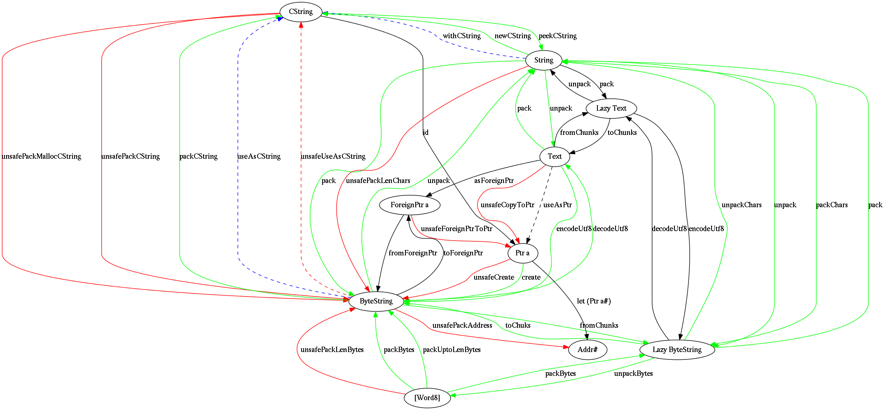

Сериализация структур данных в Haskell.
Часть 1: типы данных
2013-09-06: исправлены ошибки в тексте (спасибо qrilka)
У меня тут в черновиках завалялась старый пост про сериализацию стуктур данных в haskell, доводить её до ума и продолжать мне немного лень, но если будет интересно то могу продолжать. Изначально серия статей предполагалась одновременно с доведением до ума пакета strictput
Этим постом я хочу начать небольшую серию статей про сериализацию данных в Haskell. и описание библиотек их реализующих.
Типы данных
Перед тем как рассматривать непосредственно существующие системы сериализации и сопутсвующие им алгоритмы нужно рассмотреть типы данных, в которые можно сериализовать стуктуры. Это позволит упростить описание самой сериализации, а так же улучшит понимание низкого уровня задачи.
Сама задача сериализации может возникать в двух случаях:
- Взаимодействие с внешним рантаймом, например FFI;
- Взаимодействие с внешним миром (IPC, передача в сеть и т.д.)
Разница между этими задачами заключается в том, что в первом случае, данные находятся в пространстве одного процесса (группы процессов), а во втором — в разных, и там будет произведено их копирование (существуют варианты, при которых копирование произведено не будет, но их мы оставим в стороне). В связи с этим структуры данных для варинта 1 не должны быть перемещены GC при сборке мусора, поскольку сериализация главным образом интересна нам для второго сценария, то мы не будем посвящать много времени рассмотрению непереносимых (pinned) структур, а будем только отмечать данное свойство.
‘C’ интерфейс
При взаимодействии с файлами или сетью для передачи бинарных данных в C принятно использовать пару “указатель, размер данных”, которая описывает откуда брать данные и сколько. Существуют более интересные варианты для векторной записи (семейство функций read/writev), в этом случае используется массив структур:
struct iovec { void *iov_base; size_t iov_len; }
в некоторых типах данных можно использовать данный подход, что позволит повысить их производительность, но об этом будет сказано отдельно.
Данный интерфейс может быть изображен в haskell как (# Addr#,CSize #) но крайне не рекомендуется так делать, поскольку это сильно усложнит работу с данными, при этом не принося выгоды, поскольку во многих случаях компилятор может преобразовать структуру к виду аналогичному данному.
Для данных, которые являются строковыми в C часто ещё использются null-terminated строки
Типы haskell соотвествующие C интерфейсу
В haskell существуют следующие типы соответсующие указателям в C:
Addr#
Addr# - unlifted unpacked тип данных являющийся указателем. Стоит напомнить, что данный тип является строгим по построению. С помощью данного типа можно обращаться напрямую к данным внутри примитивных частей программы. Функции для работы с этим типом есть в GHC.Prim (пакет ghc-prim) и Control.Primitive (пакет primitive). Обычно использовние Addr# не нужно, поскольку компилятор умеет приводить приводить работу к данному типу (за это отвечает анализатор строгости).
Ptr
data Ptr a = Ptr (Addr#)Типизированная обертка над Addr (lifted, unpacked по умолчанию (изменится в ghc 7.8)), с помощью данного типа данных можно работать с указателями в “обычном” haskell коде. В подавляющем большинстве случаев ленивость и boxing убираются компилятором. Данный тип не “держит” содержимое на которое указывает и не защищает его от сборки GC.
Функции для работы с указателями предоставляются модулем ‘Foreign.Ptr’
ForeignPtr
data ForeignPtr = ForeignPtr Addr# ForeignPtrConentsУказатель, к которому можно привязывать финализаторы: действие которое должно быть выполнено как только не осталось ссылок на ForeignPtr из кода.
Общее описание структур данных
CString/CString Len
type CString = Ptr CChar -- Defined in `Foreign.C.String`
type CStringLen = (Ptr CChar, Int) -- Defined in `Foreign.C.String`Тип данных соответсвующий null-terminated и length строкам соответсвенно, обычно используется для взаимодействия с C кодом, поскольку данный тип строк является pinned. Данный тип может быть эффективно использован для низкоуровнего взаимодействия с C кодом. Стоит отметить, что существует модификация CString (ACString) в которой выделение происходит на стеке, а не в куче.
Характеристики:
- строгий
- небезопасный
- не предоставляет возможности работы с данными
Операции над типом:
- библиотеки haskell не предоставляют операций над данным типом данных
String
type String = [Char]Очень широко используемый тип данных для внутреннего представления текcтовых строк в виде потока (Stream/Lazy-Cons-List). Данный тип предоставляется базовой библиотекой Prelude и поэтому весьма часто используется не по назначению. Поскольку структура данных является ленивой, то возможно создание бесконечных и цикличеких списков, а так же итеративное построение списка.
Характеристики:
- ленивый
- безопасный
- простой в использовании
- можно использовать pattern matching без дополнительных расширений
- очень низкая локальность данных (не кэш локальный)
- высокий overhead по памяти для хранения списка (x+8+2)*n+8
- очень низкая скорость работы
- внутренний (не pinned тип)
- build/foldr deforestation
- IO библиотека существует, но все методы являются ленивыми, что подвергается жесткой критике, рекомендуется использовать не ленивый ввод-вывод, а итеративные библиотеки такие как pipes, conduit, или iteratee.
Build/forldr deforestation позволяет не создавать списки в том случае, если это без этого можно обойтись, например, в случаях, если списки играют роль “клея” между операциями,.
Операции над структурой данных:
- size: O(N) /N прыжков по памяти/ const по памяти
- a
appendb: O(size a), O(size a) выделяется строка O(size a), ‘a’ может быть освобождена. - a +: b -> O(1),
- a :+ b -> O(size a)
Все операции изменяющие структуру данных пересоздают структуру слева от списка.
[Word8]
data [] a = [] | a : [a]Аналог String для бинарных типов данных, к данному типу применяемы все пункты относящиеся к String, кроме того, что нету возможностей работы с вводом выводом.
Text
Современный внутренний тип для предствления строковых данных. Однако рассмотрение данного типа выходит за рамки поста.
ByteString
data ByteString = PS
{-# UNPACK #-} (ForeignPtr Word8)
{-# UNPACK #-} Int
{-# UNPACK #-} IntДанная структура обощает представление данных CStringLen добавляя в него параметр offset, что позволяет сильно расширить круг операций, которые доступны и безопасны. Для данного типа вся работа с памятью скрыта и пользовател предоставляется чистый и безопасный интерфейс для работы.
Размер структуры ~16байт+выделенная память, она является полностью строгой.
Данный тип работает с pinned memory посредством libc вызовов и предоставляет быстрый интерфейс для работы с бинарными данными. Операции не требующие изменения самих данных (take,drop) создают новый заголовок O(1), 8 Byte располагающийся в памяти RTS (relocable). Операции требующие изменения данных создают новую строку. Данная структура данных не поддерживает deforestation, но является самой эффективной структурой данных для хранения строк, которые должны быть прочитаны и не изменяются.
То, что каждый из блоков данных содержит указатель на начало выделенной памяти позволяет обходиться без дополнительного копирования структуры удаляя её в том случае, если на неё никто не ссылается.
Lazy ByteString
data ByteString = Empty | Chunk !Internal.ByteString ByteString
Как можно увидеть данная структура изоморфна списку байтстрок, однако есть существенное отличие: внутри каждого чанка существует не произвольная строка, а строка определенного размера. (64k)
Перевод типов данных друг в друга
Для того, чтобы показать как перечисленные типы данных переходят друг в друга, в конце поста я привел абсолютно невоспринимаемую картинку (кто хочет може предложить мне более адекватный вариант).
При переводе типов из одного в другой нужно следить за следующими вещами:
- алгоритмическая сложность операции;
- размер выделяемых структур данных;
- энергичность/ленивость операции;
- безопасность операции.
С первым пунктом все важно, второй тоже важен, так как агрессивное использование памяти существенно может изменить поведение программы относительно ожидаемого. То же относится и к ленивости, в этом случае нужно понимать, какие плюсы идут от ленивости, и не может ли произойти каскадное “форсирование” вычислений в тот момент, когда этого допускать нельзя.
С безопасностью операций дело обстоит интереснее, в том случае если мы передаем выделенную память вне рантайма Haskell, мы не можем гарантировать чистоту данной структуры, так как внешнее окружениме может изменять память как хочет. Обычно для сохранения чистоты в рантайм передается не сама структура, а её копия ’useAs*’. В этом случае нужно понимать, что данный подход приводит к увеличению сложности алгоритма и дополнительной нагрузке на память.
Картинка кликабельна: 

comments powered by Disqus